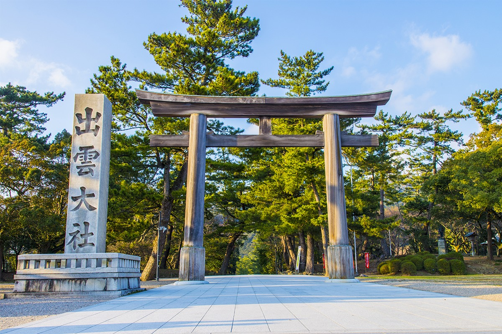
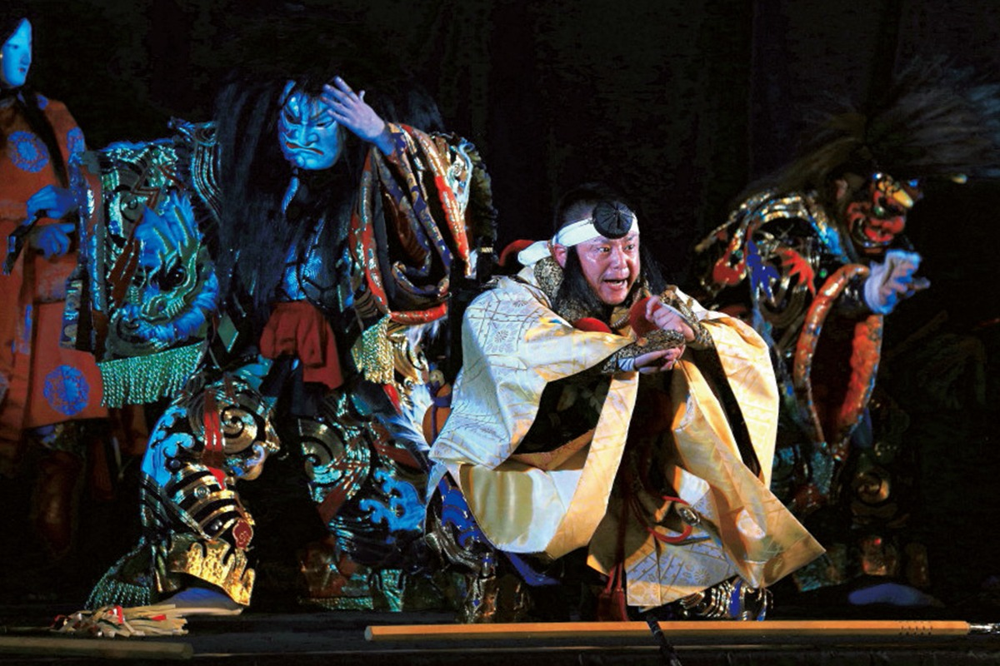
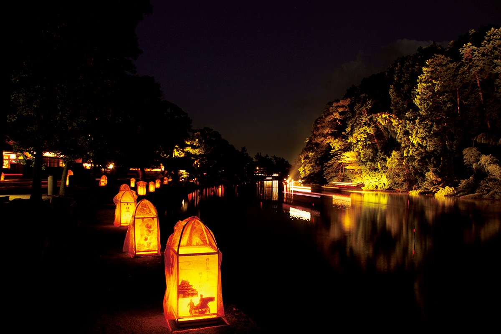
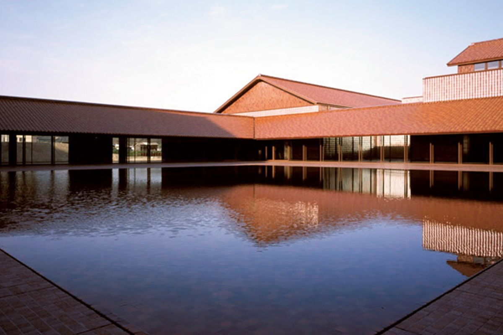
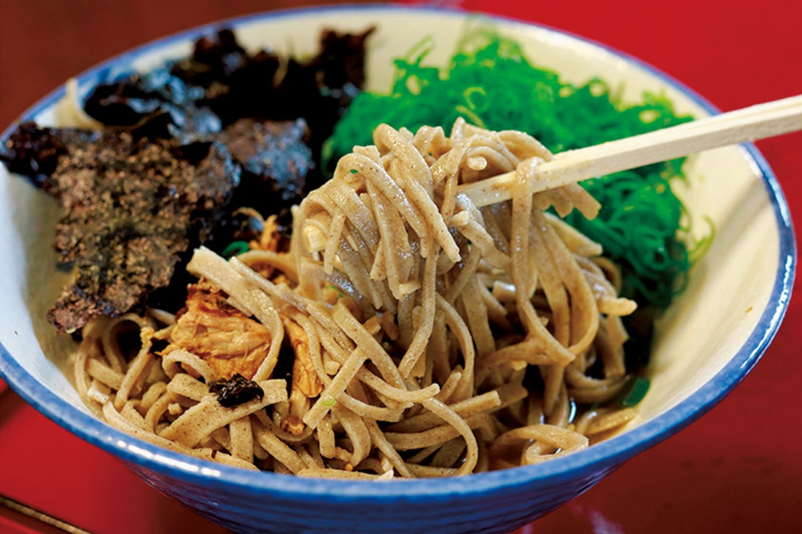
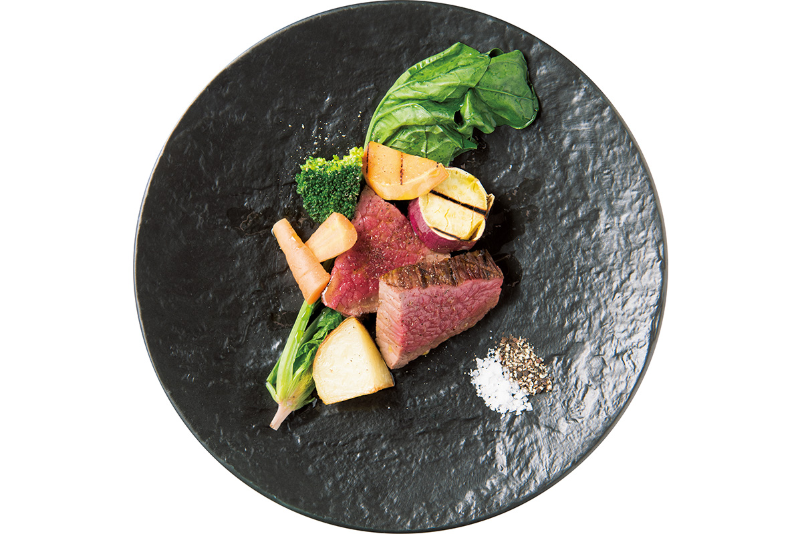
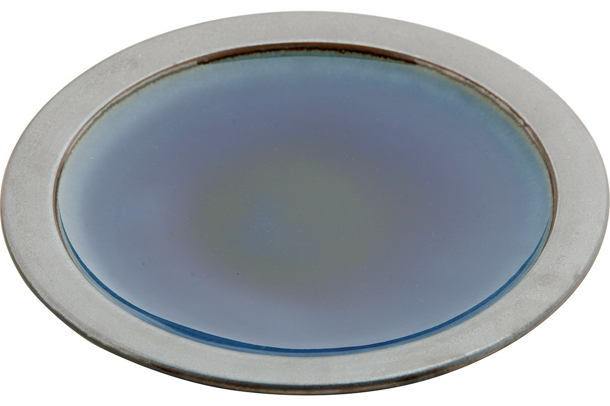
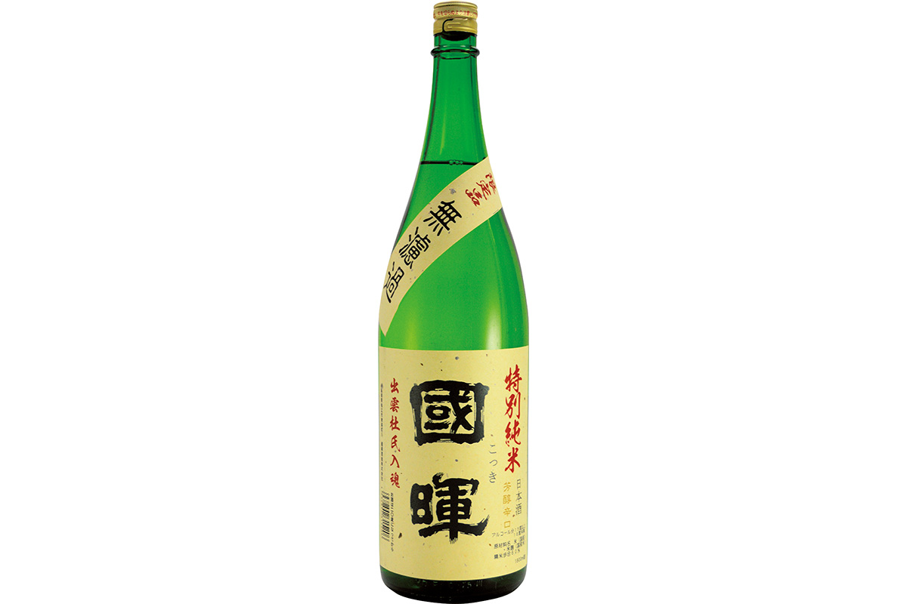

Префектура Симанэ
Симанэ: земля, куда приходят все боги

Каменные ворота-тории и столб с названием святилища Идзумо-тайся
Земля, где собираются все боги, серебряный рудник, ставший всемирным наследием, синяя керамика и ужин в доме самурая. Рассказываем, за чем ехать в префектуру Симанэ.
О префектуре
Место, куда раз в год приходят все боги
Симанэ лежит в западной части региона Санъин, и по форме префектура вытянута с востока на запад. Эти места знамениты как сцена мифов об Идзумо: здесь и сегодня стоят великое святилище Идзумо-тайся и множество древних храмов. В эпоху воюющих провинций наместник Амаго Цунэхиса сам стал владетельным князем, но в итоге верх взял род Мори, а после утверждения сёгуната Токугава земли перешли под прямое управление сёгунов. Нынешняя префектура появилась в 1881 году, то есть на 14-й год эпохи Мэйдзи.
Согласно «Идзумо-но куни фудоки», древнему описанию этих земель, название им дал бог Яцукамидзу-омицуну-но микото, герой мифа о том, как землю притягивали к острову и создавали страну. А по старому календарю в десятый месяц со всей страны сюда собираются восемь миллионов богов. В остальной Японии этот месяц называют «месяцем без богов», и только здесь, в Идзумо, «месяцем с богами»: в это время проходит множество обрядов.
Еды здесь тоже хватает: девять десятых улова на озере Синдзи приходится на моллюска ямато-сидзими, лапша идзумо-соба входит в тройку самых известных в Японии, а из мелкой рыбы делают аго-но яки. В 2007 году серебряный рудник Ивами внесли в список всемирного наследия, и туристов здесь с тех пор меньше не становится.
Что посмотреть
Танец в маске из глубины мифов
Ивами кагура
Это традиционное искусство, в котором танцуют в роскошных костюмах и выразительных масках, разыгрывая сюжеты японских мифов. В области Ивами такие представления дают по выходным и по праздникам в разных местах.

- Справки
- ассоциация туризма области Ивами
- Телефон
- +81 855-29-5647
Что ещё посмотреть
- Святилище Идзумо-тайся, одно из главных мест поклонения в стране
- Серебряный рудник Ивами со штольнями и старым городком
- Утёс Матэнгай над Японским морем
Праздники
Осенний вечер, когда вокруг замка зажигают огни
Мидзуторо в Мацуэ
Каждую осень улицы вокруг замка Мацуэ украшают светом: фонарики и огни расставляют вдоль рвов и дорожек, и получается игра света и тени. На время праздника здесь работают ларьки и проходит много других событий.

- Когда
- ежегодно с начала до конца октября
- Место
- окрестности замка Мацуэ, город Мацуэ, префектура Симанэ
Другие праздники
- Бой быков на празднике Хассаку, местная традиция, которой много веков
- Летний праздник Сэкисю хаммакко
- Обряд святилища Идзумо-тайся
Музеи и архитектура
Музей и театр под одной красной крышей
Центр искусств «Гранд Той»
Это редкий для Японии комплекс, где музей соединён с театральным залом. Крышу и стены облицевали сэкисю-гавара, красной черепицей, которую делают в западной части префектуры, поэтому здание считают одним из самых заметных в Симанэ.

- Адрес
- 5-15 Ariake-cho, Masuda, Shimane
- Телефон
- +81 856-31-1860
- Сайт
- grandtoit.jp
Что ещё посмотреть
- Художественный музей префектуры Симанэ
- Природный музей горы Санбэ «Сахимэру»
- Маяк на мысе Хиномисаки, один из самых высоких в стране
Местная кухня
Лапша, которая не терпит вилки
Соба с островов Оки
Это традиционная лапша архипелага Оки, что лежит примерно в 50 километрах к северу от полуострова Симанэ. Тесто делают только из гречневой муки, без связующей добавки, поэтому лапша получается настолько ломкой, что поддеть её палочками и не порвать удаётся не сразу.

Что ещё попробовать
- Соба из Идзумо, которую подают слоями в нескольких чашках
- Хэка-яки, блюдо из рыбы, похожее на сукияки, то есть жаркое в котле, названное в честь лемеха плуга
- Суп из моллюсков сидзими с озера Синдзи
Где поесть
Итальянская кухня в старом складе
AJIKURA
AJIKURA это ресторан итальянской кухни в стиле сатояма, то есть деревенского склона: название соединяет кухню с местностью, в которой он стоит.
Ресторан стоит среди гор Тюгоку, а внутри это переделанный старый склад, где сохранили дух постройки. Готовят здесь по-итальянски, но из местного: рыба Японского моря, овощи с высокогорных полей и дичь.

- Адрес
- 3123-4 Yagami, Onan-cho, Ochi, Shimane
- Телефон
- +81 855-95-2093
- Часы
- с 11:00 до 15:00 (последний заказ в 14:00) и с 17:30 до 22:00 (последний заказ в 20:00)
- Бронь
- на ужин нужно записаться не позднее чем за день, на обед тоже рекомендуют бронировать
- Выходной
- среда
- Сайт
- si-ajikura.com
Ремёсла
Синяя посуда с собственного месторождения
Посуда мастерской Сюссай
Мастерская делает посуду с глазурью, которую здесь называют синим Сюссай. Глину, глазурь и даже дрова для печи берут только в префектуре, а большие тарелки размером хассун, то есть около 24 сантиметров, стали визитной карточкой Сюссай.

- Телефон
- +81 853-72-0239
- Сайт
- shussai.jp
Что привезти
Сакэ из старинного склада и сладость из Мацуэ
Дзюммай дайгиндзё «Кокки»
Сакеварня использует как цех старый склад, который когда-то принадлежал князьям Мацуэ, и продолжает традицию мастеров-сакеделов Идзумо. Это дзюммай дайгиндзё, то есть сакэ высшей категории, которое делают только из риса, воды и закваски.

- Цена
- 2750 иен за 720 мл
- Телефон
- +81 852-25-0123
- Сайт
- kokki.jp
Сладость «Вакакуса» от «Сайундо»
Мягкую рисовую массу моти обваливают в светлой муке из цветов сливы, и получается известная сладость Мацуэ. В магазине она продаётся наборами по три штуки.
- Цена
- 648 иен за набор из трёх штук
- Телефон
- +81 852-27-2701
- Сайт
- saiundo.co.jp
Где остановиться
Дом самурая, где живут как дома
Такё Абэкэ
Это небольшой дом в мировом наследии, у серебряного рудника Ивами. Зданию самурайской усадьбы 230 лет, и его восстановили так, чтобы гости не останавливались в отеле, а как будто просто жили: дом сдают целиком одной группе, поэтому здесь и правда чувствуешь себя как дома.
- Адрес
- 159-1 Ha, Omori-cho, Oda, Shimane
- Телефон
- +81 854-89-0022
- Номеров
- один дом, только для одной группы
- Цена
- 100 000 иен за сутки с завтраком и ужином (цена за двух гостей, налог отдельно, сервисный сбор включён)
- Выходные
- с понедельника по среду
Местный диалект
Как здесь хвалят еду и желают не перетруждаться
- Умай ганОчень вкусно
- Мури сэнко оринсайНе берите на себя лишнего
- Нанги конги ситаТяжело пришлось, намучился
- Согэсу гáэ!Вот так и надо, так лучше всего
Рекорды
Первые в стране по угрям, бронзовым мечам и налогам
- №1 по вылову морского угря анаго
- №1 по числу бронзовых мечей, найденных при раскопках: это городище Кодзиндани
- №1 по доле своевременно уплаченных налогов
Вопросы и ответы
Два вопроса о Симанэ
Какой древний курорт упоминается в «Идзумо-но куни фудоки»?
Идзумо-Юмура-онсэн. Он стоит в верховьях реки Хи, с которой связана легенда о восьмиглавом змее Ямата-но Ороти, а в древнем описании земель источник назван целебной водой у берега реки. Сегодня здесь есть и купальни для приезжающих на день, и гостиницы, и место, где можно просто опустить ноги в горячую воду.
Как называется блюдо из рыбы, похожее на сукияки?
Хэка-яки. Словом «хэка» здесь зовут металлическую часть лемеха плуга: когда-то её использовали вместо сковороды, отсюда и название. Это старинное рыбацкое блюдо из города Ода, куда крупными кусками кладут рыбу разного сезона.
Справочник
Симанэ в цифрах
Общие данные
| Административный центр | Мацуэ |
| Муниципалитеты | 8 городов, 10 посёлков и 1 село |
| Площадь | 6708 км² |
| Население | 680 тыс. человек |
| Плотность населения | 101,4 чел./км² |
| Туристов в год | 7,3 млн |
| Символ-дерево | чёрная сосна |
| Символ-цветок | пион |
| Символ-птица | лебедь |
Климат
| Средняя годовая температура | 15,6 °C |
| Средний максимум | 33,7 °C |
| Средний минимум | -0,7 °C |
| Осадки | 1977 мм в год |
| Ясных дней | 23 |
| Дней с осадками | 148 |
| Дней со снегом | 43 |
Для путешественника
| Горячих источников | 40 |
| Отелей и рёканов | 245 |
| Художественных музеев | 18 |
| Музеев | 81 |
| Придорожных станций митиноэки | 28 |
| Объектов культурного наследия | 91, из них 7 национальных сокровищ |
| Национальные сокровища | главный зал святилища Идзумо-тайся и другие |
| Исторических памятников | 59 |
| Живописных мест | 2 |
| Памятников природы | 38 |
| Всемирное наследие | серебряный рудник Ивами и его культурный ландшафт |
| Национальные и квазинациональные парки | Дайсэн-Оки, Хиба Дого Тайсяку и горы западного Тюгоку, всего 3 |
Природные памятники
Лавовый тоннель на острове Дайкон, грот Кага-но кукэдо, куры породы кокухаку, ущелье Они-но ситабурэ, скалы Ивами татамигаура, разрез перед храмом Ивая-дзи и другие.
Жить здесь удобно и спокойно: по доле детей, которые ходят в детский сад и ясли, префектура первая в стране, а по числу жителей старше 65 лет, чьи дома приспособлены для них, вторая. По площади парков на человека Симанэ входит в первую пятёрку, так что место это доброе и к детям, и к пожилым.